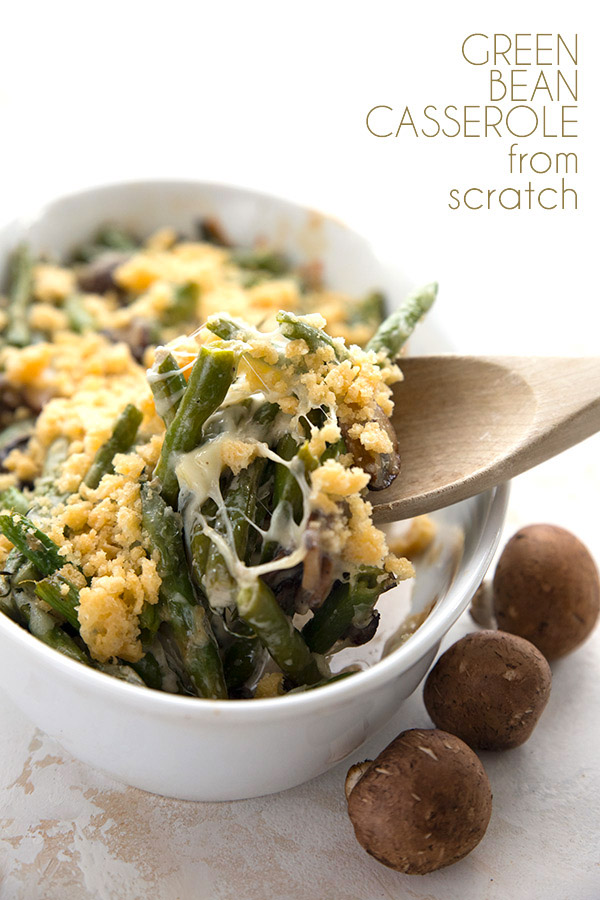
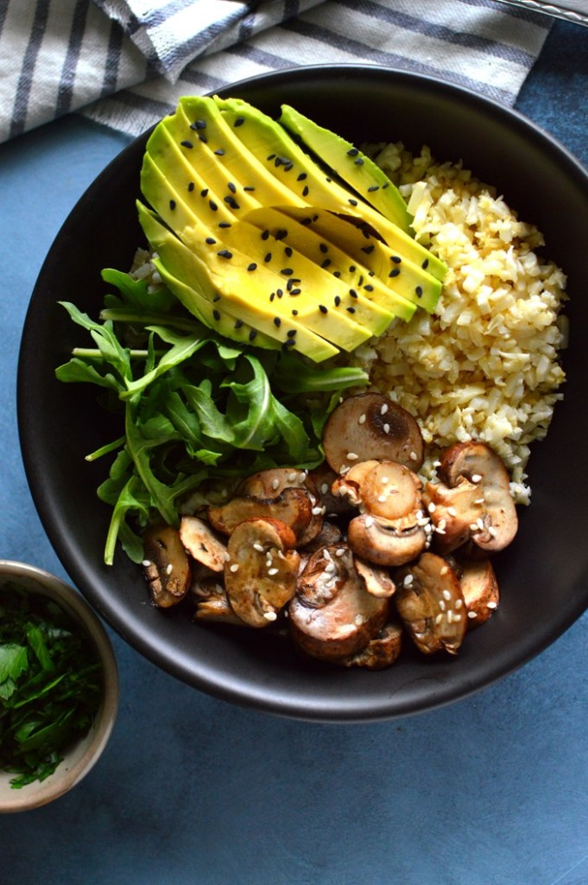

Jessica Randhawa's 10 Minute Garlic Bok Choy
Bok Choy is a very underated vegetable! It can be added to stir fry, ramen, or eaten as a side on it's on!
Let's Make it

All Day I Dream About Food's Keto Green Bean
Thanksgiving isn't the only time you can enjoy this treat! Start planning now with this awesome green bean casserole recipe!
Let's Make it

Vegan but Lazy's Keto Buddah Bowl
This bowl reminds me of relaxing in Southern California. Plenty of greens and plenty of avacados!
Let's Make it